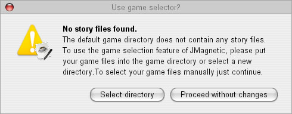

It is illegal to play Magnetic Scrolls games if you do not own the original packages. Their games, sadly enough, have been unavailable for years, and your only choice may be downloading them from the Internet. Having said this, you should get hold of the following:
(1) the story files;
(2) the graphics files (optional);
(3) the title pictures and music (optional);
(4) the hint files (optional);
(5) documentation from the original packages;
(6) the Magnetic interpreter.
A good source for this material is the Magnetic Scrolls Memorial web page, which is part of the IF Legends site at http://www.if-legends.org/
When loading a story file. the interpreter tries to open the matching graphics file, hint file, title screen and music score by using the name of the story file and the required extension. Please make sure that all files for a game share the same filename except for the extension, e.g. pawn.mag, pawn.gfx, pawn.mp3,...
Before starting the installation of JMagnetic please make sure that your system meets the minimum requirements
All platforms : Launch the installation by double clicking JMagnetic2.3.2inst.jar. If you prefer to run the installer from command line, please run
'java -jar JMagnetic2.3.2inst.jar'. On some system you might also be able to launch the programm with a right click and choosing a menu item like "Open with SUN Java...".
JMagnetic2 offers a comfortable game selection dialog. To use this feature you need either to place your game files into the gamefiles subdirectory of your JMagnetic2 installation folder or select a new path when JMagnetic2 is started for the first time. Details about the game files and how to get them can be found in the following chapters.
If the installation was successful you can start JMagnetic2 by using the icons and links that were created during installation or by changing to the JMagnetic2 installation directory and invoking the command java -jar JMagnetic2.jar
When started JMagnetic will check whether the default game files directory contains usable story files. If no story files are found this dialog will open an prompt for a new path. If you wish to select your story files manually, just proceed. The interpreter will skip the game selection and provide a file open dialog.
